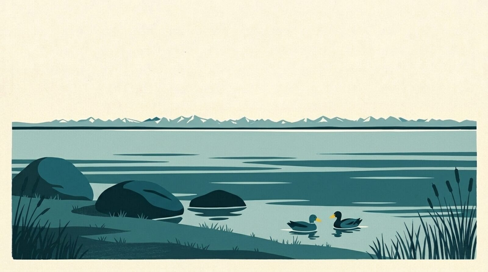
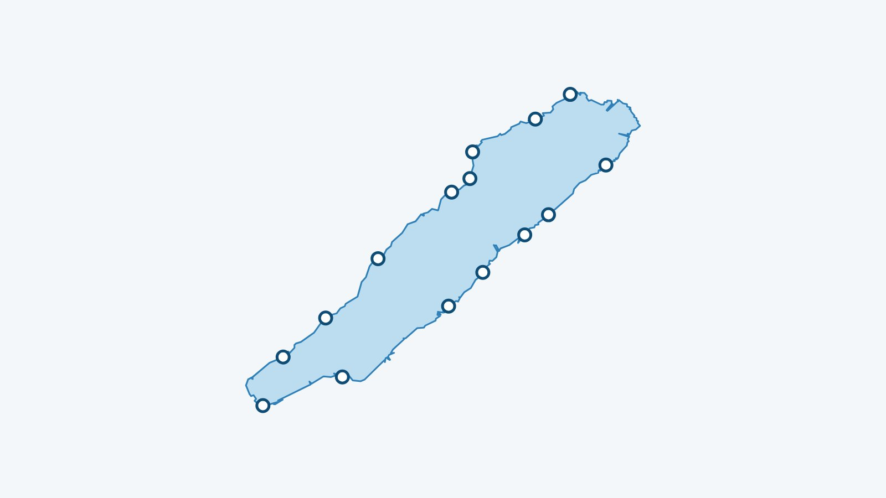

In short
My Lake shows Lake Neuchâtel’s water temperature 70 cm below the surface, updated every three hours from Eawag’s Alplakes model. The model is three-dimensional: the value is read in front of each of the 15 beaches we follow, so it can differ from one to the next.
On 26 November 2026, in the morning, the water ranged from 8.2 °C to 9.7 °C depending on the beach (70 cm below the surface, Alplakes model).
Where does the Lake Neuchâtel temperature come from?
The figures come from Alplakes, the platform run by Eawag (the Swiss Federal Institute of Aquatic Science and Technology). It combines numerical lake models with satellite data to calculate water temperature at different depths. The data is published under a CC BY 4.0 licence, and My Lake reads it every three hours.
For Lake Neuchâtel, Alplakes runs a three-dimensional model. My Lake reads the value at 70 cm depth, at the model point in front of each beach. The accuracy figure Eawag publishes, an error of about 1 °C at the surface for the large lakes (EGU 2026), applies to its one-dimensional model (Simstrat), not to this 3D model, whose accuracy it does not quantify.
Is the temperature the same at every beach?
No. Wind moves the surface water, and shallow bays warm up or cool down faster than open water: on the same day, two beaches can show different values. The current gap is calculated below. The mechanism is explained, with measured examples, in our article on Lake Geneva’s water temperature.
Why 70 cm below the surface?
Because that is roughly the water you swim in. The very top film changes quickly with sun and air; slightly deeper, the value is steadier and closer to what you feel when you get in.
The 15 beaches we follow
Each beach has its own page, with water, wind and a verdict for swimming and paddleboarding.

- Yverdon-les-Bains
- Grandson – Corcelettes
- Yvonand
- Concise
- Saint-Aubin
- Cortaillod
- Boudry
- Colombier
- Neuchâtel – Jeunes-Rives
- Hauterive
- Cudrefin
- Portalban
- Gletterens
- Forel
- Estavayer – Nouvelle Plage
Renting on Lake Neuchâtel
Each entry links to the operator’s own website when there is one. Hours and prices change: check with them.
- La Base, Surf center VD8, Yvonand, near Yvonand: Pedal boats for 4 to 6 with a slide, sailboats and stand-up paddleboards to rent, at the VD8 campsite on Lake Neuchâtel.
- Base nautique Les Vikings, Yvonand, near Yvonand: Beach and watersports base: paddleboard, kayak or canoe, windsurf board, pedal boat and sailboat.
- Alphasurf, Estavayer-le-Lac, near Estavayer – Nouvelle Plage: At the end of the Nouvelle Plage: paddleboards, canoe-kayaks, pedal boats, sailboats and towed tubes.
- Club Y-Plage, Yverdon-les-Bains, near Yverdon-les-Bains: At Yverdon beach: paddleboards, kayaks or canoes, windsurf boards, wing foil and pedal boats, plus towed tubes.
- Marine Service Loisirs, Neuchâtel, near Neuchâtel – Jeunes-Rives: In Neuchâtel harbour: pedal boats and boats to rent for a trip on the lake.
Saunas on Lake Neuchâtel
- Les Rives Zen, Estavayer-le-Lac (October to March), near Estavayer – Nouvelle Plage: Wood-fired sauna and cold dip at Estavayer’s public beach on Lake Neuchâtel, 15 October 2026 to 29 March 2027, Wednesday to Sunday (closed Mondays and Tuesdays). CHF 25 for 2 hours, CHF 35 for 3 hours.
- Les P’tits Baigneurs, Boudry, near Boudry: Wood-fired barrel sauna on Boudry beach, up to 6 people, by booking, in winter.
Where can you see the Lake Neuchâtel temperature live?
Month by month
On average the water is above 20 °C from July to September.
| Month | Average | Coldest day | Warmest day |
|---|---|---|---|
| January | 7.2 °C | 6.6 °C | 8.2 °C |
| February | 6.7 °C | 6.2 °C | 7.0 °C |
| March | 6.9 °C | 6.2 °C | 7.9 °C |
| April | 8.6 °C | 7.0 °C | 12.1 °C |
| May | 13.4 °C | 10.1 °C | 17.2 °C |
| June | 19.5 °C | 15.8 °C | 24.8 °C |
| July | 22.8 °C | 19.6 °C | 25.4 °C |
| August | 23.2 °C | 19.7 °C | 26.0 °C |
| September | 20.7 °C | 16.5 °C | 24.0 °C |
| October | 15.9 °C | 12.3 °C | 20.2 °C |
| November | 11.3 °C | 9.0 °C | 14.7 °C |
| December | 8.3 °C | 7.2 °C | 9.5 °C |
Daily averages 70 cm below the surface, one value for the whole lake, years 2023–2025 (Alplakes Simstrat model, Eawag). Near the shore and in sunny weather the water can be warmer.
In the My Lake app, free and with no account. The list of all beaches also covers the other Swiss lakes.
Lake Neuchâtel’s water right now
Each beach’s water temperature is in the My Lake app, updated every three hours.